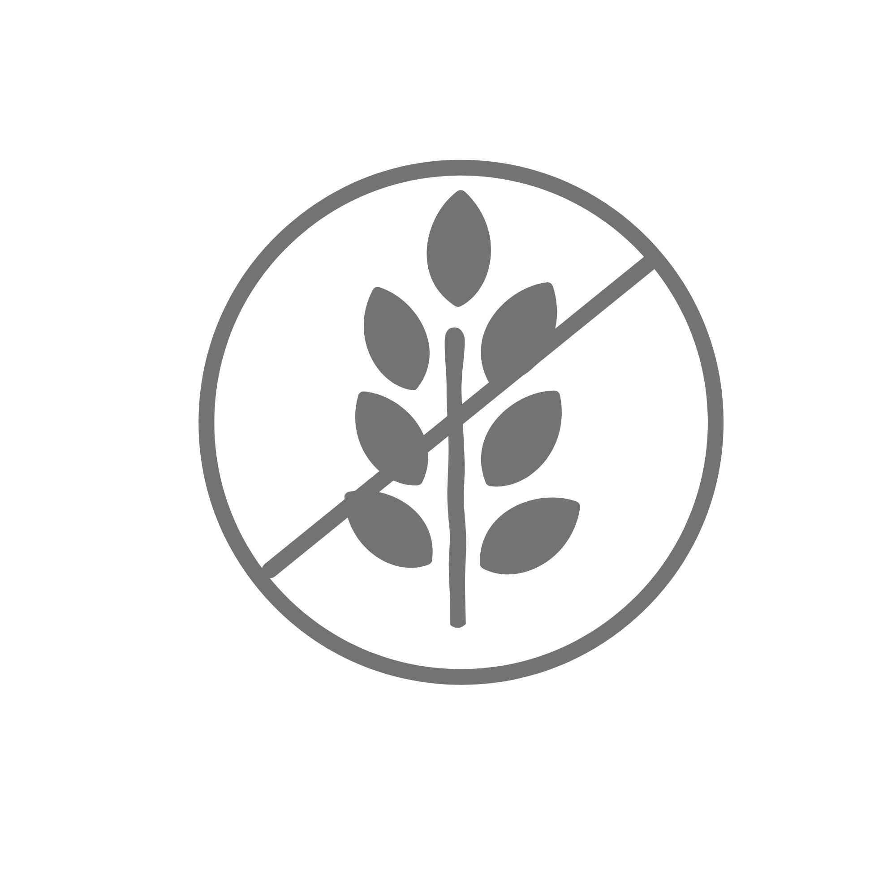

×
Home
About
Submit
☰
CO
RECIPE
Asia 
Gluten free
Vegetarian
Less than 30 minutes
Contributed by the Kode with Klossy community
All
Egg Drop Soup
China
Soy Sauce Chicken
China
Chicken Biryani
India
Dal Makhani
India
Bibimbap
Korea
Beef Kofta Curry
Pakistan
三杯鸡 San Bei Ji
Taiwan
Homemade by Rebecca Austin
Lagman
Uzbekistan
Bánh Canh
Vietnam
Bánh Cuốn
Vietnam
Vegan Bánh Xèo
Vietnam